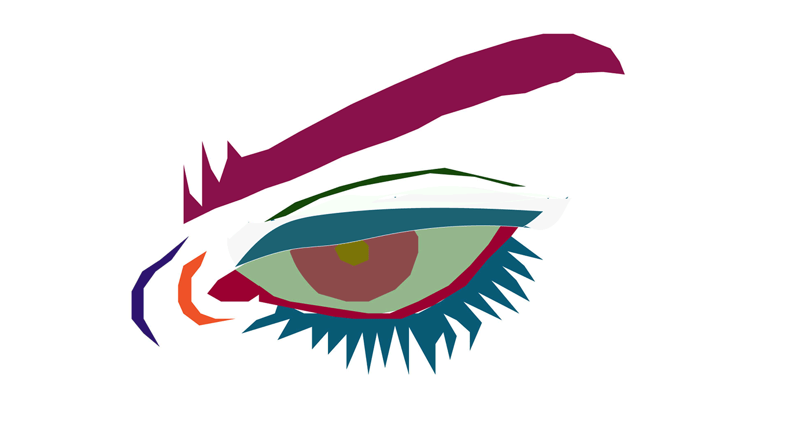

I made this gif using 9 different images i made of my eye. This project was based on the emotive eye image from one of the previous homeworks. This homework was really fun for me to make, and in the processed i realized how easy it was to make a gif. I would like to continue making gifs on my own for the fun of it.